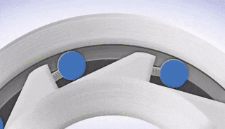

Trinquete
Los trinquetes tienen como misión impedir el giro de un eje en un sentido y permitirlo en el otro. Constan, básicamente, de una rueda dentada y de una uñeta, que se introduce entre los dientes de la rueda por efecto de un muelle o por su propio peso. La uñeta tiene la colocación idónea para impedir el giro en un sentido y permitirlo en el otro.
 En algunos casos, como en la llave de la primera figura, la uñeta puede modificar su posición para que el mecanismo sea reversible. Es decir, que bloquee el giro en un sentido o en el otro según queramos.
En algunos casos, como en la llave de la primera figura, la uñeta puede modificar su posición para que el mecanismo sea reversible. Es decir, que bloquee el giro en un sentido o en el otro según queramos.
Según la posición de la uñeta respecto de la rueda, los trinquetes pueden ser de tres tipos: exteriores, interiores o frontales:

Rueda libre
Es un elemento que se coloca en un eje o en un árbol de transmisión con objeto de permitir que el árbol motor mueva el árbol resistente y no al contrario: es decir, desacopla ambos arboles cuando el árbol resistente gira a mas revoluciones que el árbol motriz.
Un ejemplo típico de este mecanismo es el piñón de una bicicleta.Cuando pedaleamos, queremos que el movimiento del piñón se transmita a la rueda trasera para que la bicicleta avance. Sin embargo, cuando dejamos de pedalear, queremos que el piñón y la rueda se desacoplen para que no se frene la bicicleta.
Hay varias formas de implementar este mecanismo. Te dejo varias animaciones de ejemplo (la última correspondería precisamente al piñón de una bicicleta y, como puedes observar, es un caso particular del trinquete):
 |
 |
 |
 |